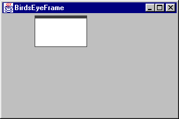

Ein Component-Event wird generiert, wenn eine Komponente verschoben
oder ihre Größe verändert wurde oder wenn sich der
Anzeigezustand einer Komponente verändert hat. Da sowohl Fenster
als auch alle Dialogelemente aus der Klasse Component
abgeleitet sind, haben die hier erwähnten Ereignisse für
nahezu alle GUI-Elemente des AWT Gültigkeit.
Ein Empfänger für Component-Events muss das Interface ComponentListener
implementieren und bekommt Events des Typs ComponentEvent
übergeben. ComponentEvent
erweitert die Klasse AWTEvent
und stellt neben getID
und getSource
die Methode getComponent
zur Verfügung, mit der die Komponente ermittelt werden kann,
die die Nachricht ausgelöst hat.
Die Registrierung der Empfängerklasse erfolgt mit der Methode
addComponentListener,
die in allen aus Component
abgeleiteten Klassen zur Verfügung steht:
Tabelle 29.2
gibt eine Übersicht der Methoden von ComponentListener
und erklärt ihre Bedeutung:
Tabelle 29.2: Methoden von ComponentListener
Das folgende Programm demonstriert die Anwendung der Methoden componentMoved
und componentResized
am Beispiel eines Fensters BirdsEyeFrame,
das schematisch sich selbst und seine Lage auf dem Desktop aus der
Vogelperspektive darstellt. Wird das Fenster verschoben oder seine
Größe geändert, so passt es seine eigene Darstellung
proportional an und zeichnet die Client-Area neu. Die Implementierung
der paint-Methode
ermittelt dazu die Seitenverhältnisse von Fenster und Desktop
und verwendet diese als Quotient zur Anzeige des Fensters im Fenster.
Um auf die Component-Events zu reagieren, registriert BirdsEyeFrame
die Adapterklasse ComponentRepaintAdapter,
die die Methoden componentMoved
und componentResized
implementiert. Sie werden immer dann aufgerufen, wenn das Fenster
verschoben oder in der Größe geändert wurde, und rufen
repaint
auf, um das Fenster neu zu zeichnen. Auf diese Weise werden alle Änderungen
des Frames sofort in seiner eigenen Client-Area gespiegelt:
001 /* Listing2902.java */
002
003 import java.awt.*;
004 import java.awt.event.*;
005
006 class ComponentRepaintAdapter
007 extends ComponentAdapter
008 {
009 public void componentMoved(ComponentEvent event)
010 {
011 event.getComponent().repaint();
012 }
013
014 public void componentResized(ComponentEvent event)
015 {
016 event.getComponent().repaint();
017 }
018 }
019
020 class BirdsEyeFrame
021 extends Frame
022 {
023 public BirdsEyeFrame()
024 {
025 super("BirdsEyeFrame");
026 addWindowListener(new WindowClosingAdapter(true));
027 addComponentListener(new ComponentRepaintAdapter());
028 setBackground(Color.lightGray);
029 }
030
031 public void paint(Graphics g)
032 {
033 Dimension screensize = getToolkit().getScreenSize();
034 Dimension framesize = getSize();
035 double qx = framesize.width / (double)screensize.width;
036 double qy = framesize.height / (double)screensize.height;
037 g.setColor(Color.white);
038 g.fillRect(
039 (int)(qx * getLocation().x),
040 (int)(qy * getLocation().y),
041 (int)(qx * framesize.width),
042 (int)(qy * framesize.height)
043 );
044 g.setColor(Color.darkGray);
045 g.fillRect(
046 (int)(qx * getLocation().x),
047 (int)(qy * getLocation().y),
048 (int)(qx * framesize.width),
049 (int)(qy * getInsets().top)
050 );
051 g.drawRect(
052 (int)(qx * getLocation().x),
053 (int)(qy * getLocation().y),
054 (int)(qx * framesize.width),
055 (int)(qy * framesize.height)
056 );
057 }
058 }
059
060 public class Listing2902
061 {
062 public static void main(String[] args)
063 {
064 BirdsEyeFrame wnd = new BirdsEyeFrame();
065 wnd.setSize(300,200);
066 wnd.setLocation(200,100);
067 wnd.setVisible(true);
068 }
069 }
|
Listing2902.java |
Listing 29.2: Das eigene Fenster aus der Vogelperspektive
Die Ausgabe des Programms ist:

Abbildung 29.1: Das Fenster sieht sich selbst aus der Vogelperspektive.